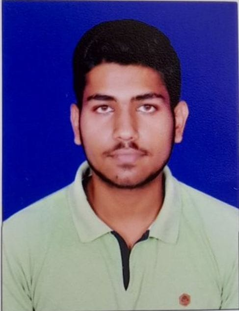

ABOUT ME
A highly motivated and detail-oriented second-year student pursuing a Bachelor's degree in Computer Science and Data Analytics at IIT Patna. Skilled in data analysis, machine learning, Python, C, C++, web development, and effective communication.
EDUCATION
High School
Mount Litera Zee School, Passed out: 2019
10 + 2
S.B College, Passed out: 2021
Bachelor of Science in Computer Science and Data Analytics
IIT Patna, Graduation: 2026
EXPERIENCE
Capstone Project in Web Development
Salesforce Developer
- Salesforce Fundamentals
- Organizational Setup
- Types of Flows & Security
- Apex, Testing & Debugging
- VS Code Setup & CLI Setup
- Lightning Web Components (LWC) & API
Certifications
- Smart Internz Salesforce Developers Virtual Internship
- Certificate for Completion of Advanced C++ Training by IIT Bombay
- CDAC Ethical Hacking and Penetration Testing Virtual Internship
SKILLS
- Languages: C, C++, Python, Java, JavaScript, HTML, CSS
- Frameworks: React.js, Node.js, Bootstrap
- Tools: MySQL
- Soft Skills: Leadership, Innovation, Team Building